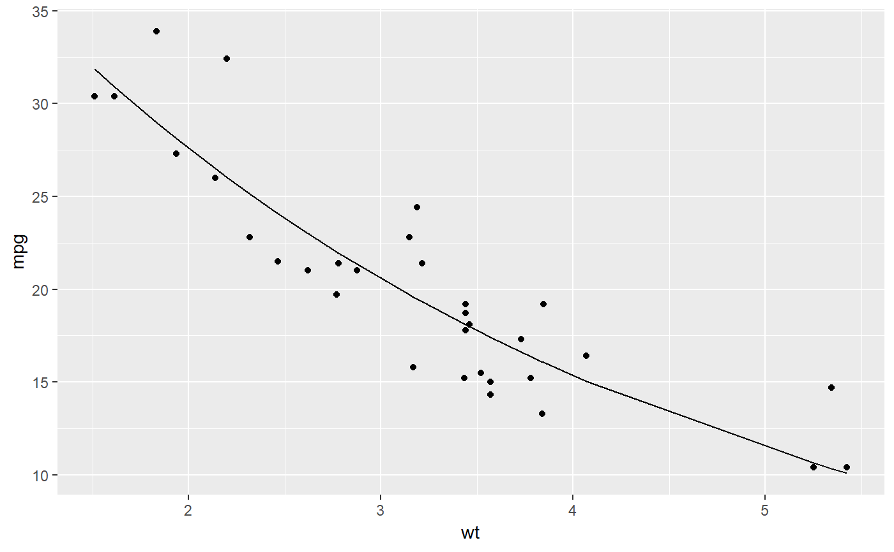

These methods tidy the coefficients of a nonlinear model into a summary, augment the original data with information on the fitted values and residuals, and construct a one-row glance of the model's statistics.
# S3 method for nls tidy(x, conf.int = FALSE, conf.level = 0.95, quick = FALSE, ...) # S3 method for nls augment(x, data = NULL, newdata = NULL, ...) # S3 method for nls glance(x, ...)
| x | An object of class "nls" |
|---|---|
| conf.int | whether to include a confidence interval |
| conf.level | confidence level of the interval, used only if
|
| quick | whether to compute a smaller and faster version, containing
only the |
| ... | extra arguments (not used) |
| data | original data this was fitted on; if not given this will attempt to be reconstructed from nls (may not be successful) |
| newdata | new data frame to use for predictions |
All tidying methods return a tibble without rownames.
The structure depends on the method chosen.
tidy returns one row for each coefficient in the model,
with five columns:
The term in the nonlinear model being estimated and tested
The estimated coefficient
The standard error from the linear model
t-statistic
two-sided p-value
Fitted values of model
Residuals
the square root of the estimated residual variance
whether the fit successfully converged
the achieved convergence tolerance
the data's log-likelihood under the model
the Akaike Information Criterion
the Bayesian Information Criterion
deviance
residual degrees of freedom
When the modeling was performed with na.action = "na.omit"
(as is the typical default), rows with NA in the initial data are omitted
entirely from the augmented data frame. When the modeling was performed
with na.action = "na.exclude", one should provide the original data
as a second argument, at which point the augmented data will contain those
rows (typically with NAs in place of the new columns). If the original data
is not provided to augment and na.action = "na.exclude", a
warning is raised and the incomplete rows are dropped.
na.action
nls() and summary.nls()
#> # A tibble: 2 x 5 #> term estimate std.error statistic p.value #> <chr> <dbl> <dbl> <dbl> <dbl> #> 1 k 49.7 3.79 13.1 5.96e-14 #> 2 e 0.746 0.0199 37.5 8.86e-27augment(n)#> # A tibble: 32 x 4 #> mpg wt .fitted .resid #> <dbl> <dbl> <dbl> <dbl> #> 1 21 2.62 23.0 -2.01 #> 2 21 2.88 21.4 -0.352 #> 3 22.8 2.32 25.1 -2.33 #> 4 21.4 3.22 19.3 2.08 #> 5 18.7 3.44 18.1 0.611 #> 6 18.1 3.46 18.0 0.117 #> 7 14.3 3.57 17.4 -3.11 #> 8 24.4 3.19 19.5 4.93 #> 9 22.8 3.15 19.7 3.10 #> 10 19.2 3.44 18.1 1.11 #> # ... with 22 more rowsglance(n)#> # A tibble: 1 x 8 #> sigma isConv finTol logLik AIC BIC deviance df.residual #> <dbl> <lgl> <dbl> <dbl> <dbl> <dbl> <dbl> <int> #> 1 2.67 TRUE 0.00000204 -75.8 158. 162. 214. 30# augment on new data newdata <- head(mtcars) newdata$wt <- newdata$wt + 1 augment(n, newdata = newdata)#> # A tibble: 6 x 13 #> .rownames mpg cyl disp hp drat wt qsec vs am gear carb #> <chr> <dbl> <dbl> <dbl> <dbl> <dbl> <dbl> <dbl> <dbl> <dbl> <dbl> <dbl> #> 1 Mazda RX4 21 6 160 110 3.9 3.62 16.5 0 1 4 4 #> 2 Mazda RX4 ~ 21 6 160 110 3.9 3.88 17.0 0 1 4 4 #> 3 Datsun 710 22.8 4 108 93 3.85 3.32 18.6 1 1 4 1 #> 4 Hornet 4 D~ 21.4 6 258 110 3.08 4.22 19.4 1 0 3 1 #> 5 Hornet Spo~ 18.7 8 360 175 3.15 4.44 17.0 0 0 3 2 #> 6 Valiant 18.1 6 225 105 2.76 4.46 20.2 1 0 3 1 #> # ... with 1 more variable: .fitted <dbl>